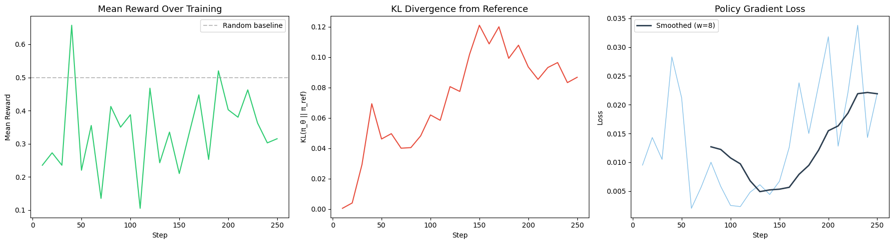
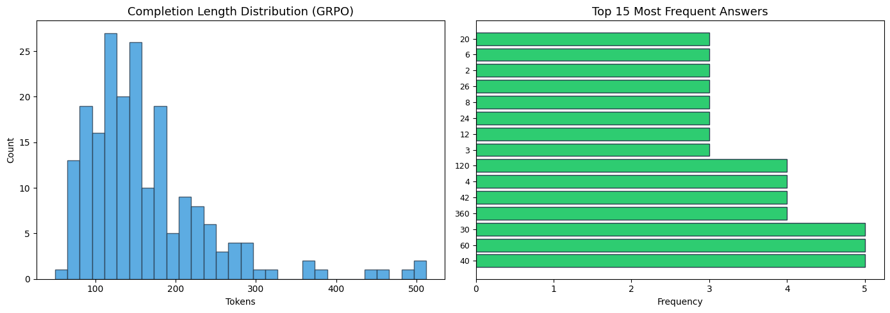
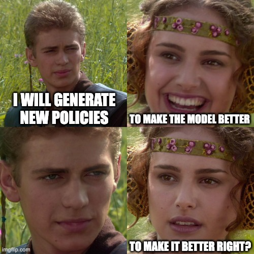

Does RL Make a 0.6B Model Better at Math?
What happens when you replace the entire RLHF reward pipeline with a regex and a number comparison? You get a clean answer to a clean question: can reinforcement learning teach a small language model to reason about math? Short answer - No.
Introduction
The standard recipe for improving language model behavior with reinforcement learning involves three steps: supervised fine-tuning, training a reward model on human preferences, and then running PPO against that reward model. This pipeline works, but it is expensive, fragile, and introduces a fundamental weakness — the reward model is a neural network, and neural networks can be fooled.
For math, there is a simpler option. Math has a property that most language tasks do not: verifiable correctness. You can check whether a model’s answer to “What is 48 + 24?” is right without a neural network. A regex and an equality check will do.
This experiment tests a direct question: if we train Qwen3-0.6B on grade school math using only a symbolic correctness checker as the reward signal, does the model get better at math? We use Group Relative Policy Optimization (GRPO) — a variant of PPO that eliminates the need for a critic network — and evaluate on the GSM8K benchmark.
The answer, it turns out, is no. Accuracy drops by 10 percentage points. But why it drops is more interesting than a simple improvement would have been.
The full experiment notebook is available on GitHub.
Background: What Is GRPO?
Standard PPO (Proximal Policy Optimization) requires two neural networks: a policy (the language model) and a critic (a value network that estimates expected future reward). For language models, the critic is typically another full-sized model, which doubles your memory requirements.
GRPO (Group Relative Policy Optimization), introduced in DeepSeek-R1, removes the critic entirely. Instead of estimating advantages using a learned value function, GRPO computes advantages within a group of sampled completions for the same prompt.
Here is how it works. For each training prompt \(x\), the model generates \(G\) candidate completions \(\{y_1, y_2, \ldots, y_G\}\). Each completion receives a reward \(r_i\) from the reward function. The advantage for completion \(i\) is:
\[ \hat{A}_i = \frac{r_i - \text{mean}(\{r_j\}_{j=1}^{G})}{\text{std}(\{r_j\}_{j=1}^{G})} \]
This is just z-score normalization within the group. If a completion scored higher than the group average, it gets a positive advantage (reinforce this behavior). If it scored lower, it gets a negative advantage (suppress this behavior). No critic network needed.
The policy is then updated using a clipped objective similar to PPO, with an added KL divergence penalty to prevent the model from drifting too far from its initial weights:
\[ \mathcal{L} = -\hat{A}_i \cdot \log \pi_\theta(y_i \mid x) + \beta \cdot D_{KL}(\pi_\theta \| \pi_{\text{ref}}) \]
where \(\beta\) controls how strongly the model is anchored to its pretrained behavior. Too high and the model cannot learn. Too low and it may collapse to a degenerate policy.
The key advantage of GRPO for small-scale experiments: it fits on a single GPU. A 0.6B policy model with group size 4 requires roughly 8–12 GB of VRAM, well within the capacity of a free-tier Colab T4.
The Reward Function
The reward function is the philosophical center of this experiment. In standard RLHF, a neural reward model scores completions on a continuous scale. This model is trained on human preference data, and it can be wrong. Worse, it can be exploited; models learn to produce outputs that look good to the reward model without actually being good. This is reward hacking.
For math, I bypass this entirely. The reward function has two components:
Correctness reward. Extract the numerical answer from the model’s output (from \boxed{} or by parsing the last number), compare it to the ground truth answer from GSM8K. Return 1.0 if they match, 0.0 otherwise.
Format reward. If the model uses \boxed{} at all — even with the wrong answer — return a small bonus of 0.1. This teaches the model to use the expected output format early in training, which makes the correctness reward easier to obtain.
\[ r(y) = \underbrace{\mathbb{1}[\text{extract}(y) = \text{truth}]}_{\text{correctness}} + \underbrace{0.1 \cdot \mathbb{1}[\text{boxed format} \in y]}_{\text{format bonus}} \]
The total reward per completion ranges from 0.0 (wrong answer, no format) to 1.1 (correct answer in the right format). There is no learned component. The only way to score 1.0 is to actually solve the math problem.
How the Verifier Works in Practice
The verifier needs to solve one problem: extract a number from free-form model output and compare it to the ground truth. This sounds trivial, but small language models are messy. Qwen3-0.6B does not always wrap its answer in \boxed{}. Sometimes it writes “the answer is 42”, sometimes “total = 42”, sometimes it just ends with a bold number. The extraction logic must handle all of these.
The first step is stripping Qwen3’s thinking tags. Even with thinking mode disabled, the model occasionally emits <think>...</think> blocks:
def strip_think_tags(text: str) -> str:
"""Remove <think>...</think> blocks from Qwen3 output."""
return re.sub(r"<think>.*?</think>", "", text, flags=re.DOTALL).strip()Next, I try to extract from \boxed{} — the format explicitly asked for in the system prompt:
def extract_boxed_answer(text: str) -> str:
"""Extract the answer from \\boxed{...} in model output."""
match = re.search(r"\\boxed\{([^{}]+)\}", text)
if match:
answer = match.group(1).strip()
answer = answer.replace(",", "").replace("$", "").strip(".")
return answer
return ""When \boxed{} is not present, I fall back to pattern matching against common answer formats. Each pattern is tried in order of specificity:
def extract_final_number(text: str) -> str:
"""Fallback: extract the last number from the model's output."""
patterns = [
r"(?:the\s+)?answer\s+is\s*:?\s*\$?([+-]?[\d,]+\.?\d*)", # "the answer is 42"
r"(?:total|result)\s*(?:is|=|:)\s*\$?([+-]?[\d,]+\.?\d*)", # "total = 42"
r"=\s*\$?([+-]?[\d,]+\.?\d*)\s*$", # ends with "= 42"
r"\*\*([+-]?[\d,]+\.?\d*)\*\*\s*$", # bold number at end
r"(\d[\d,]*\.?\d*)\s*$", # last number in text
]
for pattern in patterns:
match = re.search(pattern, text, re.IGNORECASE | re.MULTILINE)
if match:
return match.group(1).replace(",", "").strip(".")
return ""The correctness reward function ties it all together. It receives a batch of completions from TRL’s GRPOTrainer, unwraps them (TRL passes completions as chat message lists, not plain strings), extracts the answer, normalizes both sides for comparison, and returns a binary reward:
def correctness_reward(completions, ground_truth, **kwargs) -> list[float]:
"""Binary reward: 1.0 if correct, 0.0 if wrong."""
rewards = []
for completion, truth in zip(completions, ground_truth):
text = _unwrap_completion(completion)
predicted = extract_answer(text) # tries boxed first, then fallback
if predicted and normalize_number(predicted) == normalize_number(truth):
rewards.append(1.0)
else:
rewards.append(0.0)
return rewardsThe format reward is simpler — it just checks for the presence of \boxed{}:
def format_reward(completions, **kwargs) -> list[float]:
"""Soft reward for using the \\boxed{} format at all."""
rewards = []
for completion in completions:
text = strip_think_tags(_unwrap_completion(completion))
if re.search(r"\\boxed\{.+\}", text):
rewards.append(0.1)
else:
rewards.append(0.0)
return rewardsBoth functions are passed to TRL’s GRPOTrainer as a list. TRL calls each one and sums the rewards per completion. The full implementation also includes number normalization (handling commas, decimals, integer-float equivalence) and a completion unwrapping utility that handles the different formats TRL uses internally.
Developers from TRL if you are reading this. I have felt pain, and I shall wait for my time to share that pain with you :)
Experiment Setup
Model
Qwen3-0.6B with thinking mode disabled. Qwen3 supports a built-in chain-of-thought mode that wraps internal reasoning in <think>...</think> tags. We disable this via enable_thinking=False in the tokenizer to isolate the RL training signal. Any change in reasoning behavior comes from the gradient updates, not from a prompting trick.
Why 0.6B? Three reasons. First, GRPO needs to generate \(G\) completions per prompt during training, so inference speed is the bottleneck. Second, a small model makes any RL-driven improvement (or degradation) unambiguous — the model is not already saturating the benchmark. Third, it fits on a free Colab GPU.
Dataset
GSM8K (Grade School Math 8K): 7,473 training problems and 1,319 test problems. Each problem is a multi-step arithmetic word problem with a final numerical answer marked with #### <number>. Typical problems involve 2–5 reasoning steps.
Training Configuration
| Parameter | Value | Rationale |
|---|---|---|
| Algorithm | GRPO | No critic network needed |
| Group size (\(G\)) | 4 | Balance between advantage quality and VRAM |
| KL penalty (\(\beta\)) | 0.04 | Moderate anchor to pretrained behavior |
| Training steps | 250 | Enough to observe signal without overfitting |
| Effective batch size | 4 prompts \(\times\) 4 completions = 16 | |
| Learning rate | 5e-6 | Conservative for RL stability |
| Max completion length | 512 tokens | GSM8K solutions rarely exceed 300 tokens |
| Sampling temperature | 0.7 | Exploration during group sampling |
| Precision | BF16 | Standard for modern GPUs |
Evaluation Protocol
I evaluated on 100 problems from the GSM8K test set using greedy decoding (temperature = 0) for reproducibility. The same evaluation code and subset are used for both the baseline and the trained model. I have also measured accuracy (correct final answer) and format compliance (uses \boxed{}).
Compute
All training and evaluation ran on a single NVIDIA A100-SXM4-40GB via Google Colab. Training took approximately 1.5 hours for 250 GRPO steps. The entire pipeline, including baseline evaluation, training, post-training evaluation, and analysis, completed in under 3 hours.
Results
Quantitative Results
| Metric | Baseline (SFT) | GRPO-Trained | Delta |
|---|---|---|---|
| Accuracy | 57.0% | 47.0% | -10.0% |
| Format rate | 97.0% | 98.0% | +1.0% |
GRPO training reduced accuracy by 10 percentage points. The model got worse at math. Format compliance improved marginally from 97% to 98%, confirming that the format reward works as intended.
Training Dynamics
The full training run is logged on Weights & Biases:
The training dynamics reveal three observations:

1. Reward signal is noisy but flat. The mean reward fluctuates between 0.3 and 0.7 across training without a clear upward trend. With group size 4, each advantage estimate is computed from only 4 samples — this is statistically noisy.
2. KL divergence stays moderate. The model does not drift catastrophically from its pretrained weights. The KL penalty (\(\beta = 0.04\)) is doing its job, keeping the policy close to the reference distribution.
3. Loss decreases but accuracy does not improve. The policy gradient loss drops, which means the model is successfully learning to increase the probability of higher-reward completions within each group. But this does not translate into higher absolute accuracy.
Qualitative Comparison
On problems that both models solve correctly, the outputs are structurally similar. The GRPO-trained model tends to produce slightly longer completions (~101 tokens vs ~84 tokens) with marginally more explicit intermediate steps.
Problem: “Natalia sold clips to 48 of her friends in April, and then she sold half as many clips in May. How many clips did Natalia sell altogether in April and May?”
Both the baseline and GRPO model produce the correct answer (\(\boxed{72}\)) with nearly identical reasoning chains: compute \(48 / 2 = 24\), then \(48 + 24 = 72\).
Problem: “Betty is saving money for a new wallet which costs $100…”
Both models produce the correct answer (\(\boxed{5}\)) with the same step-by-step breakdown. The GRPO model adds a slightly more verbose final sentence.
The qualitative evidence suggests GRPO did not fundamentally change the model’s reasoning strategy. It learned to format outputs slightly better and to be marginally more verbose, but the underlying problem-solving approach remained the same.
Reward Hacking Analysis
One of the central research questions was whether reward hacking emerges when the reward is binary and verifiable. We analyzed the GRPO-trained model’s outputs on 200 test problems.

| Metric | Value |
|---|---|
| Unique answers | 133 out of 197 |
| Format compliance | 98.5% (197/200) |
| Mean completion length | 162 tokens |
| Completion length std | 72 tokens |
No format gaming. The model does not collapse to outputting a single answer like \boxed{0}. With 133 unique answers out of 197 formatted responses, the answer distribution is healthy.
No length exploitation. The completion length distribution shows a natural spread (mean 162, std 72) without degenerate modes. The model is not padding outputs or truncating them to game the reward.
No distribution collapse. The model attempts different answers for different problems rather than memorizing a small set of high-reward outputs.
The conclusion: with a symbolic verifier, there is no surface to hack. The model cannot convince a regex that a wrong answer is right.
Why Did Accuracy Drop?
It was destined. The 10-point accuracy drop is the most important result of this experiment. Let us analyse what went south.
Capacity of Smolness
Qwen3-0.6B has 28 transformer layers and a 1024-dimensional hidden state. Its baseline GSM8K accuracy of 57% represents the performance ceiling that supervised fine-tuning achieved during pretraining. This was achieved using the full pretraining corpus and compute budget.
GRPO, with 250 steps on a single GPU, is asking the model to learn a better policy than what millions of supervised training steps produced. For a model this small, the supervised policy may already be near-optimal — the model simply lacks the capacity to implement more sophisticated reasoning strategies. RL can rearrange the probability mass over outputs, but it cannot add new computational depth.
Noisy Signals
With group size \(G = 4\), each advantage estimate is the z-score of 4 samples. This is statistically unreliable. Consider: if a model has 57% accuracy, the expected number of correct answers in a group of 4 is 2.28. The standard deviation of a binomial with \(n=4, p=0.57\) is 0.99. The advantage estimates are dominated by sampling noise rather than signal.
Larger group sizes (16, 32, 64) would produce more stable advantages but require proportionally more VRAM during the generation phase.
KL vs Accuracy Trade-off
The KL penalty prevents the model from drifting far from its pretrained weights. This is a safety mechanism — without it, RL can collapse to degenerate policies. But it also means the model is constrained to policies near the SFT checkpoint. If the SFT checkpoint is already near-optimal for this model size, RL can only make things worse by adding noise to an already-good policy.

When Should You Use GRPO with Verifiable Rewards?
Based on this experiment and the broader literature, here are concrete guidelines.
Use GRPO When:
1. The model has headroom. If the base model’s accuracy is well below what you believe the architecture can achieve, RL has room to improve. DeepSeek-R1 demonstrated large gains on models with 7B+ parameters where the SFT baseline was far from saturation. A 0.6B model at 57% on GSM8K is likely already near its capacity ceiling.
2. Group size is large enough. The quality of GRPO’s advantage estimates depends directly on group size. With \(G = 4\), the z-score normalization is noisy. Published results that show GRPO improvements typically use \(G = 16\) or higher. This requires more VRAM but produces more stable gradients.
3. The reward captures what you want. Binary correctness is clean but coarse. A model that gets the right answer via a lucky calculation and a model that gets it through careful step-by-step reasoning receive the same reward. Process reward models (which score intermediate steps, not just the final answer) can provide richer signal, but they reintroduce the learned-reward-model problem.
4. You have enough training budget. 250 steps is short. Published GRPO experiments often run for thousands of steps with curriculum scheduling (easy problems first, hard problems later). A longer training run with careful hyperparameter tuning might yield different results, even at 0.6B.
When NOT to use GRPO:
1. The model is too small. RL optimizes the policy surface, but it cannot expand the model’s computational capacity. If the model lacks the depth or width to implement multi-step reasoning, RL gradients will rearrange probability mass without improving capability. The result is effectively noise, not learning.
2. Your reward signal is too sparse. With binary correctness on hard problems, most completions in a group score 0.0. The advantage estimates become: “this one got it right, the rest didn’t.” This is a weak gradient signal. We must consider softer reward functions or curriculum strategies that ensure a reasonable fraction of completions score positively. Manually creating such verification rules is a tedious labour even for vibe coding tools. One must LLM as a judge.
3. Supervised data is available and cheap. If you can construct or collect supervised training data for your task, SFT is almost always more sample-efficient than RL for small models. RL shines when the task is hard to supervise (e.g., open-ended reasoning, creative writing) or when you want to go beyond the SFT ceiling. At 0.6B, I did not find evidence of an RL ceiling above SFT.
Conclusion
I trained Qwen3-0.6B on GSM8K using GRPO with a symbolic correctness verifier as the only reward signal. The result is a 10-point accuracy drop (57% to 47%) with a marginal improvement in format compliance (97% to 98%) and no evidence of reward hacking.
Whether this result is of any use, is not really our concern. It establishes a capacity floor for verifier-RL: at 0.6B parameters with group size 4 and 250 training steps, GRPO with binary correctness reward does not improve math reasoning. The model is simply too small and the signal is too noisy for RL to discover a better policy than what supervised pretraining has already achieved.
The absence of reward hacking is the positive takeaway. With a symbolic verifier, the reward function is incorruptible. There is no neural network to fool. This validates the core premise of verifier-RL: for tasks with checkable answers, you do not need a learned reward model.
The natural next steps are to scale up (Qwen3-1.7B, Qwen3-4B), increase group size (16+), extend training duration (1000+ steps), and experiment with process rewards that score intermediate reasoning steps. The question is not whether verifier-RL works — DeepSeek-R1 and others have demonstrated that it does. The question is where the capacity threshold is, and this experiment puts a lower bound on it.
The full experiment code is available on GitHub. Training logs are on Weights & Biases.